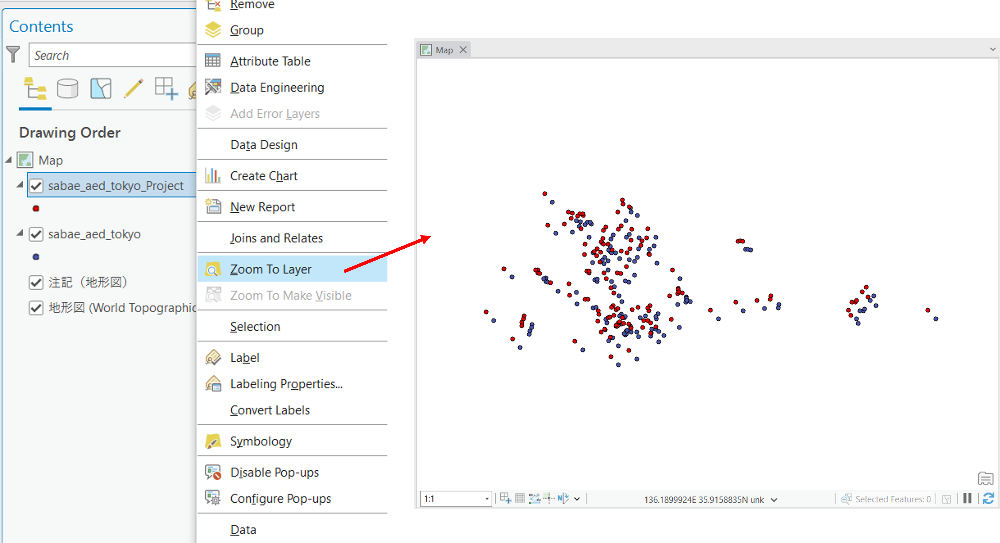

空間データの座標変換
本教材は、「空間データ」の実習用教材です。ArcGIS Proを用いた空間データの座標変換について解説しています。地理空間情報（GISで扱うことのできるデータ）は、測地系と座標系に基づいた位置情報を保持しています。測地系や座標系は様々なものがあります。そのため、複数のデータを処理する場合は、各データの座標系を統一する必要があります。ラスタデータの座標変換は別の実習で行います。
Menu
- 測地座標系の変換
- 投影座標系の変換
実習用データ
Sabaeをダウンロードしてください。
測地座標系の変換
sabae_aed_tokyo（Tokyo）とsabae_aed_jgd2000（JGD 2000）のシェープファイルを読み込む。GISで空間座標の変換をする場合は、データそのものの変換のみでなく、地図の表示ウィンドウも変換後のデータの座標系にあわせて再設定する必要がある。地図の表示ウィンドウは、一番最初に読み込んだデータの座標系に合わせて設定される（データを読み込む前は、WGS 1984 Web Mercator (auxiliary sphere)がデフォルトとして設定されている）。

まず、データの空間座標をProperties > Source > Spatial Referenceから確認する。このデータは、Tokyo（4301）ということがわかる。

今回はこの座標系をJGD2011（6668）に変換する。Analysis > ToolsからProjectを検索し以下の手順を実行する。


- 変換するデータを指定する
- 地球のアイコンをクリックし、変換先の座標系を設定する
6668を検索して、JGD2011をクリックするOKを選択Run実行する
結果が新しいデータとして出力されるが、ArcGIS Proには異なる座標系のデータを最初に読み込んだデータの座標系に合わせて見かけ上変換して表示する機能があるため、その機能をオフにして、変換結果を確認する。Mapの上で右クリックし、Properies > Coordinate SystemsからUnknownを選択し、OKをクリックする

レイヤの上で右クリックし、Zoom to Layerをクリックすると、２つのデータの分布がずれて表示されていることを確認できる。この際、ポイントの色を変更したり、地形図 (World Topographic Map)をオフにしたりすると、結果をわかりやすく表示できる。

投影座標系の変換
今回は書き出した緯度経度のデータを平面直角座標系のJGD2011 Japan zone 6に変換する。Analysis > ToolsのProjectから以下の手順を実行する。

- 変換するデータを指定する
- データ名に重複しないように名前を変える
- 地球のアイコンをクリックし、変換先の座標系を設定する
6674を検索して、JGD2011 Japan zone 6をクリックするOKを選択Run実行する
レイヤの上で右クリックし、Zoom to Layerをクリックすると、1つのデータしか表示されていないことが確認できる。

ズームアウトすると、別の場所に変換前のデータがあることがわかる。それぞれ、データの空間座標系が異なるため、別の位置に表示される。

Mapの上で右クリックし、Properies > Coordinate SystemsからLayers > JGD2011 Japan zone 6を選択し、OKをクリックして地図の表示ウィンドウの設定をデータの座標系に合わせておく。

課題
課題1
東京23区コンビニのデータをJGD2011の平面直角座標系へ投影変換し、地図をレイアウトしてください。
課題用データ
東京23区コンビニをダウンロードしてください。
課題1の完成例

課題2
地理座標系と投影座標系の違いについて、200~300字程度でまとめてください。
課題3
前回ダウンロードしたベクタデータのうち、JGD2011の平面直角座標系でなかったものを回答してください。